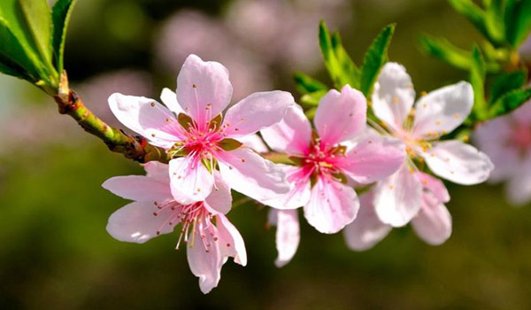
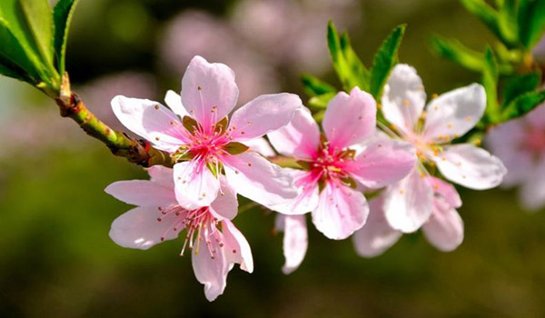

bunga-bunga tropis memiliki warna cerah dan berbunga sepanjang tahun.
Bunga-bunga tropis antara lain bunga sepatu, teratai, kamboja,mawar, kenanga dll.
Bunga subtropis memiliki musim tertentu untuk berbunga.
contoh bunga subtropis antara lain: sakura, tulip
tidak ada gambar
tidak ada gambar
tidak ada gambar
 
read more

read more